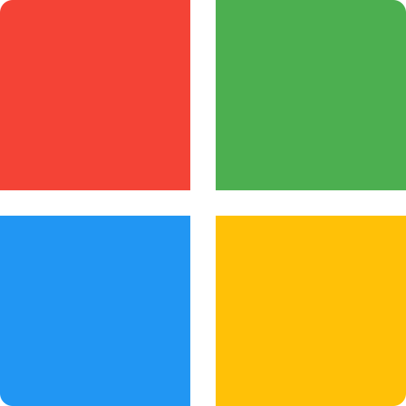

<div class="grid">
    <div class="col-12 md:col-offset-2 md:col-8">
        <div class="card"  style="margin-top: 25vh;">
            <div style="text-align: center;">
                
            </div>

            <div style="text-align: center;">
                <p-button styleClass="p-button-outlined" (click)="toLogin()">
                    
                    <span class="ml-2 font-bold">Se connecter via Microsoft</span>
                </p-button>
                <br><br><br>
                <small>Si vous n'avez pas d'adresse email IMS, vous pouvez vous connecter avec votre adresse email personnelle en <a routerLink="/login-externe" title="Connexion externe">cliquant ici</a>.</small>
            </div>
            
        </div>
    </div>
</div>